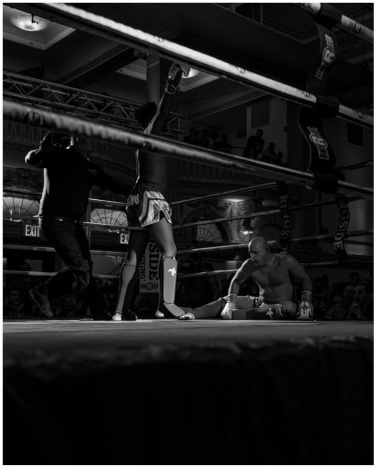
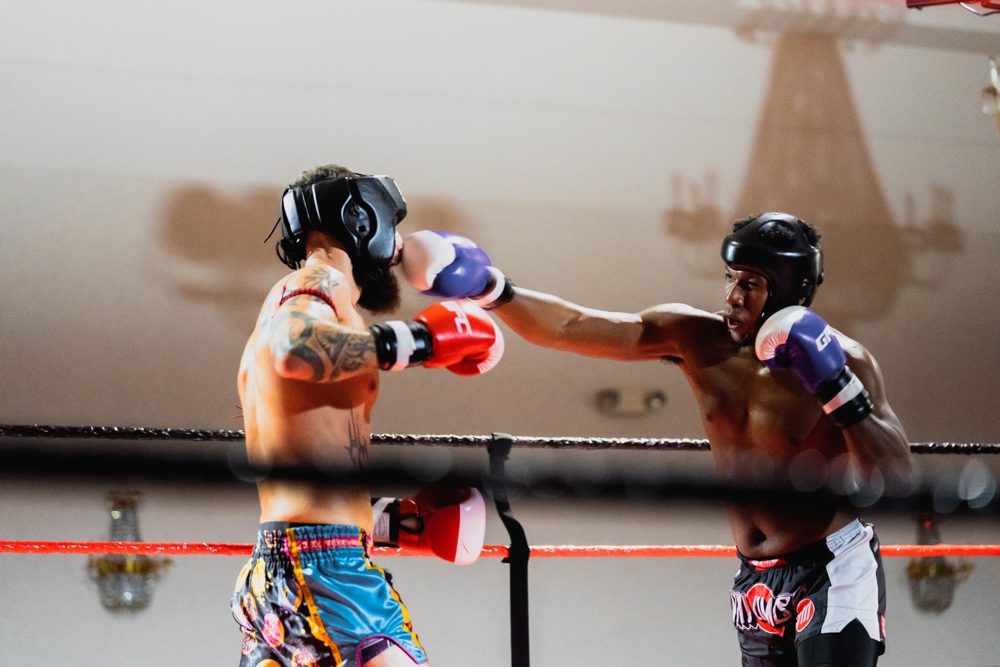

Interests
Some of my Interests include:
- Learning: I'm a perpetual student; I often find myself trying to learn as many new things as possible.
- Trivia: Avid trivia fan. Love being able to test my knowledge.
- Art: Big fan of comics, animation, drawing, and painting. A little rusty at drawing, though.
- Movies: Avid movie fan. I will frequently purchase a blu-ray of a film I've seen or want to see.
- Muay Thai: I currently train and compete in Muay Thai. Boasting an amateur record of 2-0. Eager to compete again.  
- Football: Even though I'm from Philadelphia, I'm an avid fan of the Carolina Panthers ... they aren't making it easy.
- Technology: Love learning about new technology, whether it be EVs, new computer hardware, even textile innovations; technological advances will always peak my interests.
- Current Events, Politics, Social Issues: I was benefited from going to a culturally diverse school district which allowed me to interact with people from various backgrounds and gain understanding and empathy towards everyone's plight. This instilled an interest in sociological affairs that continues to shape who I am.